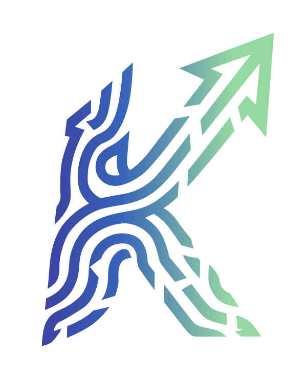

Compute sharing is in development
Now you’re the ISP
Your AI compute, shared on your terms.
ISP here means AI inference provision, not internet connectivity.
AIPSTER is being built to help you securely share AI inference with people you choose, from your own machines or supported providers, with control over access, limits, and revocation.
Planned support spans local CPUs, GPUs and clusters, plus eligible API-backed capacity. This site presents the direction; secure compute sharing is not live yet.
- Resources
- 1 1 offline
- Reachable
- 0 heartbeat freshness
- Requests
- 12 cumulative
- Measured rate
- Not measured no tok/s in this build
-
Demo inference node (simulated)offline
- CPU
- demo cpu
- GPU
- none
- Last seen
- never
Not currently reachable.



What’s in this build
Every surface carries its real state. Shipped means it was in the deployed build checked on 2026-10-31; nothing here claims live inference, paid compute or real peer federation.
- Shipped
- Shipped, off by default
- Fixture only or unverified
- Not in this build
| Surface | State | Evidence |
|---|---|---|
| Landing page and the v0.2 intro video | Shipped | Native controls, captions and a transcript on the homepage. |
| Research and model / LoRA diagrams | Shipped | Published conceptual figures; labels are not asserted to match current repository naming. |
| Control panel sign-in shell | Shipped | GitHub OAuth handshake and demo login; handshake shapes verified, completed sign-in not claimed. |
| Authenticated API boundary | Shipped | Unauthenticated calls return 401. |
| Local-worker installer docs | Shipped | Model-free mock health check; does not connect or enable AIPSTER jobs. |
| DGM fixture preview | Shipped, off by default | Flag-gated. |
| Fabric adviser | Shipped, off by default | Flag-gated and fixture-first; no provider key configured at the release owner’s 2026-10-31 check. |
| Federation UI shell | Fixture only | Labelled fixture-only, with no live peers. |
| Live inference | Not in this build | The job API returns 501 INFERENCE_DISABLED. |
| Model and adapter catalog | Merged, deploy unverified | PR #50 merged to main after the 2026-10-31 check; the deployed build was not re-checked in this pass. |
| Paid compute and billing | Not in this build | No marketplace or payments. |
| Real peer federation | Not in this build | Fixture transport only. |
Source: the repository README, live demo section verified 2026-10-31.
People you choose. Limits you set.
The goal is to help you make AI inference capacity available to the people and teams you authorize, with clear permissions and visibility into how it is used.
- Choose your capacityLocal CPUs, GPUs and cluster resources.
- Choose who can use itPermission-based access for people and teams.
- Set limits and keep visibilityPlanned controls for usage and access.
- Revoke access when neededOwner control is part of the proposed design.
Planned capabilities. Secure sharing is not live yet. API-backed capacity is in scope only where provider terms permit sharing or resale; provider credentials stay private.
The AIPSTER intro cut, v0.2
The current progress and vision cut, presenting peer-to-peer AI inference across personal meshes that share compute and GPUs, with less dependence on any single provider. It is a direction, not proof of working live inference; concept visuals are not product evidence. No autoplay. The cut carries burned-in captions, so the player’s caption track is off by default.
Read the transcript
Voiceover: They could take your AI away. What if more of that power belonged to us? Our vision for AIPSTER: peer-to-peer AI inference across personal meshes, sharing compute and GPUs—less dependence on any single provider. Experimental recursive self-improvement, designed to optimize routing and inference. Don't let the data centers be the only ones that have the power to compute. AI is for everyone.
The underlying research
IRB refinement infrastructure, an external Darwin Gödel Machine (DGM) controller, bounded experiment loops and optional JEV advice. The proposed fabric routes whole workloads across machines rather than splitting a model across them.

Proposed IRB / DGM component flow. Labels are conceptual, not a canonical match to current repository naming.
Full-size SVGPNG

Not a claim of verified concurrent multi-LoRA serving. The Medina example is historical and has not been reverified.
Full-size SVGPNG